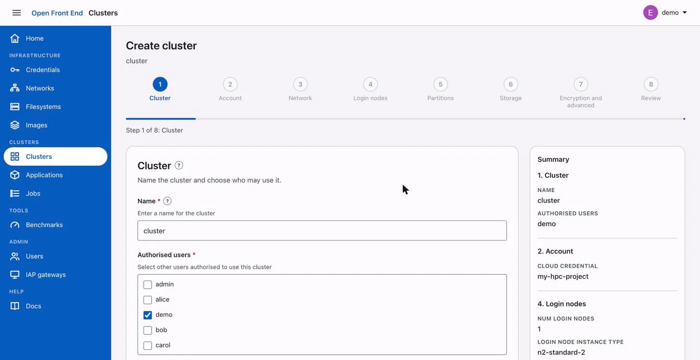
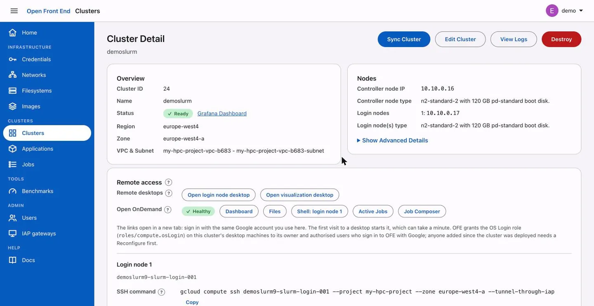
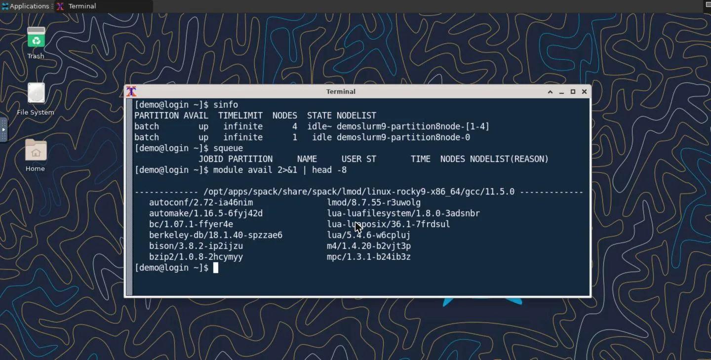
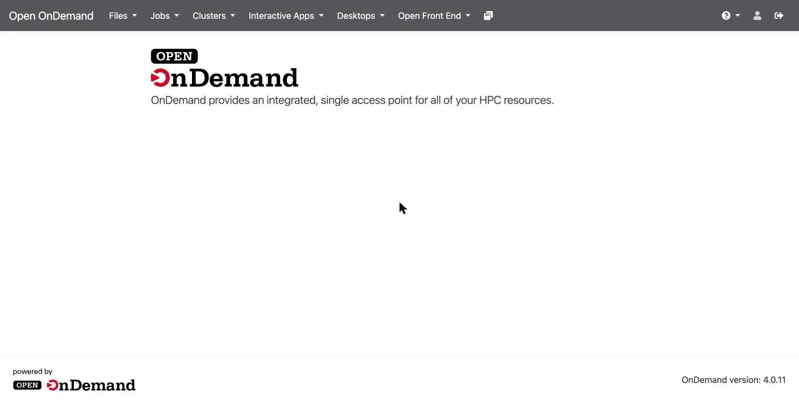
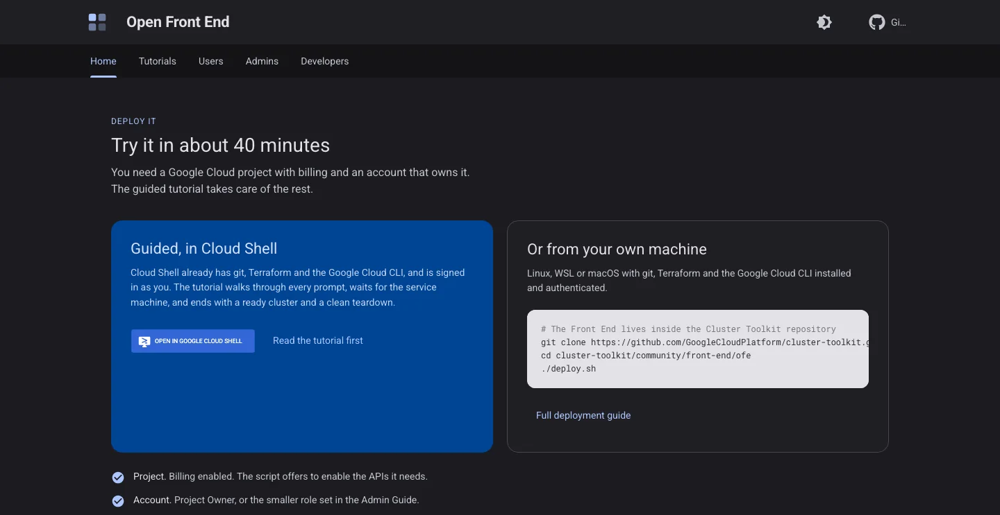

Open source
In your Google Cloud project
Supported by nAG
Open Front End
Cloud native
- Containerised services
- Simple, repeatable updates
- Security & compliance
- Monitoring with Grafana
- Production grade
Gemini advisor
- Describe the workload
- Ranked blueprints
- Validated by gcluster
- Cost estimate
User experience
- Guided cluster wizard
- Desktop in the browser
- Open OnDemand
- Google sign-in
Compliant foundations
- Your project, your policies
- IAM & OS Login identity
- IAP access, no public IPs
- Customer-managed keys
- Private networking
Open Front EndOpen source · Apache 2.0
One web portal for HPC on Google Cloud
Clusters
Networks & storage
Applications
Jobs
Users & quotas
Benchmarks
Cluster ToolkitOpen source · Google
Curated blueprints, turned into infrastructure
Blueprintsproven recipes
Modulesnetwork · storage · compute
gclustervalidates & expands
Terraformapplied for you
Packermachine images
Spackpackaged applications
Slurm clusterWhat you get
Controller
Login nodes
Partitions
Storage
NVIDIA GPUs
Google CloudYour project
Compute Engine
Filestore
Cloud Storage
VPC & IAP
Vertex AI
Cluster Toolkit at the core. Open Front End for everyone around it.
Open Front End · Create clusterstep 1 of 8

Open Front End · Cluster detailstatus: ready

Login node desktop · noVNCin a browser tab

Open OnDemand · DashboardFiles · Jobs · Clusters · Desktops

Cluster Builder with Gemini · demo recording2 min 50 s · captions, no sound
openfrontend.orgdocumentation and tutorial

Google Cloud for Engineering and Beyond
From compliant foundations
to Open Front End
Open Front End makes HPC on Google Cloud easier to use: a web portal over the Cluster Toolkit that lets every user get the HPC they want, when they want it.
Press → or tap to begin
Thank you
Make your HPC and AI journey
a success
We want to help. Come and talk to nAG.
Scan for the docsGuides, the Cloud Shell tutorial and the source.openfrontend.org